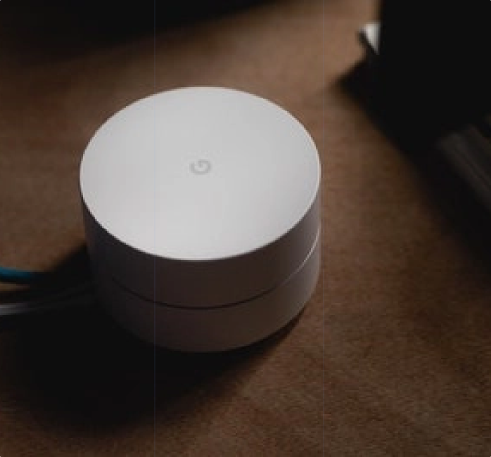

Science, Human, Artificial Intelligence
5 mins read
Nofel | Inventor, Musician
C
urrently, the numbers of participants in clinical
studies are low. Studies show that there is a myriad
of reasons for these low numbers. But, some of the
largest determining factors are the overwhelming
amount of possible trials, the lack of ability to
sort and find related trials, and the difficulty in
making travel arrangements. An AI-based website could
help potential participants sort through the
thousands of studies to determine their best matches.
This proposed website, AClinicalTrial.com, could also
use its AI functionality to provide additional
services such as travel
INTRODUCTION
Clinical trials or interventional studies are
experiments conducted in clinical research. These trials
study how human subjects react to certain biomedical or
behavioral interventions such as vaccines, drugs, and
treatments. They are also meant to test reactions to new
ways of using already known drugs and treatments. Their
purpose is to determine if these interventions are safe,
efficacious, and effective. Clinical trials require
approval from their relevant countries prior to their
start. This approval does not mean that the intervention
being tried is safe just that the clinical trial can
begin. In fact in the US, only approximately 10% of
drugs which started in clinical trials on humans are
approved by the FDA. The process for developing new
drugs takes on average 10 years. The clinical trials
alone last six to seven years. This lengthy timeline is
one reason why there is so much planning put into
conducting a clinical trial. Normally trials run in four
phases. The first three are the most important phases
where the number of human
participant goes from a small group to several hundred
or thousands. With many trials, in the early stage, a
number of healthy participants are needed to test if the
medicine or the intervention can be tolerated. In
further stages, the clinical trials need patients who
are affected by the condition, which the intervention is
designed to address. This is needed because more precise
measurements are required for the dosage and the timing.
There are many specific requirements based on the nature
of the condition being studied and the finding the right
group of volunteers. It takes months or even years to
find suitable volunteers, this is especially true for
trials which are focused on rare diseases or those
focused on children where a number of legal and ethical
questions arise regarding participation. The last phase
is designed to monitor the effect on the whole
population and possible side-effects in widespread
usage. This phase happens when the intervention is
already available in the marketplace. Information can be
accessed on both public and private clinical studies on
websites such as
ClinicalTrials.gov. This platform is run by the National
Library of Medicine (NLM) at the National Institutes of
Health (NIH). Their database contains information about
studies conducted throughout the US, as well as, 201
other countries around the world. The study records
include information about the:
Disease or condition in question.
Intervention (for example, the medical product,
behavior, or porcedure being studied).
Title, description, and design of the study.
Requirements for participation
Locations where the study is being conducted.
Contact information for the study locations.
Links to relevant information on other health
websites.
Scientific articles on the topic.
Some records also provide information about the results
of the study, the participants, the outcome and any
adverse effects
CLINICAL TRIAL SEARCH INTEREST
As previously noted, clinical trials depend on a large
number of participants, both those that are affected by
the conditions, as well as, healthy participants.
Studies show that while people hold positive attitudes
toward clinical trials there is a low level of
participation. For example, less than 5% of adults with
cancer participate in clinical trials related to the
illness and only between 5 and 12% of healthy volunteers
participate in trials. This is an ongoing issue with
clinical trials and is one of the reasons why the trials
can take so long to complete. The National Cancer
Institute has determined that the two main reasons why
cancer patients do not want to participate are fear of
getting a placebo and not wanting to be used as “guinea
pigs”. Given that clinical trials are a necessary step
for
developing new and better treatments, participation
levels need to increase. Of course, trials must not
override the rights and needs of patients, therefore it
is of utmost importance that any enrolment is done with
as full consent as possible. Because of possible
infringement of patients’ rights, doctors are sometimes
hesitant to talk to patients about clinical trials. As
well, they need to find a balance between giving too
little information, which can lead to confusion, and too
much information, which can lead to anxiety and perhaps
despair. One proposed way on how to circumvent this
problem is to focus on motivating possible candidates to
actively seek information about clinical trials so that
they are better prepared to discuss the information with
their doctors and make an informed decision.
The access to information and motivation to actively
seek out trials seems to be critical. One study suggests
“that patients who use the cognitively effortful
information seeking and information-processing
decisional strategies are more effective in coping with
life-threatening illnesses.” Past research has shown
that a lot of individuals who join clinical trials do so
not because of information about the study but because
they are mostly influenced by “non-rational” factors.
These factors include the relationship with their
doctor, general beliefs about clinical trials, and even
message cues. All this shows the importance of
introducing a simple and efficient way for interested
parties to access clinical trial databases and find the
actual information they need. While there is no single
unified
worldwide register of trials, ClinicalTrials.gov is the
biggest database available with approximately
two-hundred and forty thousand registered trials.
However, one study shows that it is far from easy to
conduct a proper search of this registry or others that
are available. The study developed four different search
strategies — very precise, precise, sensitive, and very
sensitive. These strategies differ on the basis of how
many specific conditions and how many specific
interventions were mentioned. The study determined that
none of the strategies was very good, but that the best
results were with the sensitive one. Their conclusion
was that the most efficient search approaches, in terms
of finding as many of the available relevant trials and
the fewest irrelevant trials, remains to be established.
The people who are searching for clinical trials have
different motives. A number of healthy volunteers are
needed, and
while their motives might be purely altruistic, at least
some see it as a matter of gaining extra income. Indeed,
in some trials, individuals are compensated for the risk
they take. One website claims that a volunteer can earn
hundreds or even thousands of dollars. But, those
participants who are affected by the condition in
question have many more potential benefits. They will
most likely be treated at leading medical facilities
often for free and will receive treatment which is not
widely available. Moreover, they can take a more active
role in their own healthcare, help future generations,
and all those suffering from the same condition.
Clinical trials are especially important for those
suffering from chronic, rare, and life-threatening
medical conditions. It should also be noted that not
only do the patients receive medical treatment but in
cases where the technology has not yet found a cure,
clinical trials are helpful as they can provide a better
quality of life for those who cannot be fully cured.
Furthermore, without clinical trials developing vaccines
would be much more difficult. These vaccine studies,
while controversial to a degree as they are often
conducted in underdeveloped countries which are the most
affected ones and involve a number of placebo methods as
well, are the number one way of eradicating certain
diseases.

INTERNATIONAL CLINICAL TRIALS
ClinicalTrials.gov is the biggest registry and it lists
262,570 trials from all over the world. As of January
01, 2018, it includes 47% Non-US only trials, 36% U.S.
only trials, 5% of the trials which are conducted both
in the US and Non-US, and 12% are trials where the
location is not provided. After the US as the number one
country with 107,579 total trials, Europe has around 70
thousand trials, and China with around 27 thousand
clinical trials. More importantly, out of all of the
trials, there are 45,551 studies which are recruiting
volunteers. They break down to 57% are outside of the US
(25,838), 38% are in the US (17,367) and 5% are both in
and out of the US (2,346).
ClinicalTrials.gov started their registry in 2000 and
had only around 5.5 thousand trials in the registry that
year. But from 2006 and 2007, there has been a steady
sharp rise of registered trials, because of the decision
by International Committee of Medical Journal Editors to
require trial registration as a condition of publication
from 2005, and the FDA expanded registration
requirements from the end of 2007.
There are currently several million people taking part
in clinical trials worldwide.
Both private and public sectors are involved in clinical
trials. In the US by law, trials can be funded by
pharmaceutical companies, academic medical centers, even
voluntary groups, as well as Federal agencies such as
the National Institute of Health. The costs of running a
trial and developing a new medicine are huge and can be
in the billions of dollars. Reportedly 60% to 70% of the
costs of development are for clinical trials. This
amounts to 80 to 90 billion dollars per year. In 2000,
it was reported that around 70% of the money from
clinical drug trials in the US comes from the
pharmaceutical industry and not the public sector. In
the EU, the situation is similar where around 61% are
sponsored by the pharmaceutical industry and around 39%
by non-commercial sponsors. Taking into account the huge
prices for developing and the small percent of these
medications making it to the market there has even been
accusation that the private sector tries influencing the
results of the trials.
But while it is true that pharmaceutical companies fund
trials and they might have their own interests at heart,
the companies themselves are not the ones who directly
conduct that clinical trials. They are done and tested
by independent organizations according to protocols and
designs which are approved by the review boards. All the
results are in the end reviewed by the regulatory
agencies, such as the FDA (US), EMA (Europe), and PMDA
(Japan).
In the last decade, a lot of those interested in
conducting clinical trials have started to outsource
them to so-called Contract Research Organizations
(CROs). These basically privately-owned companies are
specialized in research and help with clinical trials,
as well. They provide services for pharmaceutical
industries, as well as, governmental institutions. This
outsourcing has been a huge trend in the past years and
many major corporations are using CROs. Around 50% of
CROs perform outsourced clinical trial for the
pharmaceutical industry. Using CROs arguably cuts down
the costs and time when specific trials are conducted.
It is reported that top areas of their research are
oncology, metabolic disorders, cardiovascular, and
infectious disease. Some of the CROs manage only a part
of the trial, for example reviewing the clinical trial
data collected by a clinical investigator. Others are
specialized in regulatory support, data analysis, or
clinical trial management. Bigger CROs offer to manage
all aspects of the trials. And while they perform the
trial, the sponsor is the one responsible for the
integrity of the trial and the data behind it. Cutting
costs on the development of new medicine arguably allow
pharmaceutical companies not only to lower prices but
also to develop drugs and treatments for rare diseases
which have a smaller market.
IQVIA which reported revenues of 7.8
billion USD. It has facilities across the
globe in 100 countries, which includes a
wide portfolio of clinical research and
post-research services (92), and employs
50 thousand people.
Laboratory Corporation of America
Holdings is second on this list with a
bigger revenue of 9.4 billion, but with a
smaller portfolio of services (31).
Parexel which has the second number of
services (79), and a revenue of 2.4
billion.
Pharmaceutical Product Development, LLC
is present in 47 countries with 89
offices and 19 thousand employees. One
NGO claims.
PRA Health Sciences, Inc. is another expert in clinical
development with 70 offices all around the world, with
over 13 thousand employees.
Not all pharmaceutical companies outsource their
clinical trials, partly or in full. Reportedly, in 2013
two large European pharmaceutical companies Roche and
Novartis each had almost 1000 active trials, spending
between 5.5 and 7 billion dollars on this alone.
CLINICAL TRIALS IN DEVELOPING COUNTRIES
In the last few years, there has been a shift from
conducting clinical trials in developed countries toward
those conducted in developing and emerging nations. It
is very common that clinical trials are conducted in
different countries at the same time. There are
different reasons for shifting to developing nations and
while there are some practical reasons, as for example
to test a vaccine you need the population to be in great
number subjected to the disease at hand, there are
financial reasons as well. One NGO claims that currently
one in every two drugs sold in Switzerland has been at
least partly developed on the basis of clinical trials
conducted in developing or emerging countries. The
reasons they mention for this change is that it’s not
only cheaper, but there are much fewer regulations, or
at least they not as strict. This fact might lead to a
serious breach of ethical standards, however. Almost
half of these trials are never made public and therefore
we have no idea what kind of risk the volunteers have
been subjected to. In their conclusion, they claim that
in the case of Switzerland, one of the most developed
nations of the world, it is impossible to determine
which clinical trials ultimately lead to the approval of
specific drugs.
A joint study by a number of organizations from December
2016 in Egypt illustrates how clinical trials are run in
developing countries. Egypt has become a very attractive
destination for clinical trials for a number of reasons,
leading it to host the most trials in the Middle East
and North Africa. The country itself has a good research
infrastructure and a fast-growing population, which has
been described as “treatment-naïve”. In other words,
most of the population is not fully aware of the risks
from participating in these trials. The costs in Egypt
are also lower than other similar countries. In addition
to this, almost 50% of the population has no health
insurance and the costs of treatment represent a huge
burden on the affected population. This leads to the
problematic situation in which poor people are joining
clinical trials because this is the only way for them to
have access to medical treatment. Even if the results of
the trials are not certain and can be risky. This opens
the door for possible exploitation of these populations.
Luckily, most of the trials are late-stage ones with
products which have already been available in developed
countries. In fact, this is in accordance with Egyptian
laws which only allows testing products that have
already been approved in other countries. Still, around
16% of the trials in Egypt are in phase 1 and 2. The
problem in Egypt is that there is no robust legislation
governing trials and the governmental bodies can
interpret differently the conditions necessary for the
trial to be conducted. Furthermore, one of the biggest
problems is that the drugs on trial are not
systematically available to most of the population. This
fact goes against certain ethical standards by not
allowing participants to more freely choose if they want
to volunteer in the trial or not.
The problems from the example of Egypt are present in
many other cases, as well. In 2013, a similar report was
presented regarding phase 3 trials in Argentina. Similar
to the case of Egypt, a lack of clear legislation rules
led to certain companies taking advantage of enrolment
of babies in trials who are from very poor segments of
the population. Another problem is an improper use of
placebo trials and most importantly the discontinuation
of treatment after the trial was over, not to mention
the lack of any compensation from problems arising from
the trials.
Casetetur sadipscing elitr, sed diam nonumy eirmod
tempor invidunt ut kia labore et dolore magna
aliquyam erat, sed diam voluptua. At vero eos et
accusam et justo duo dolores et ea rebum. Stt clita
kasd gubergren, no sea takimata sanctus estr sit amet
vero eos et.
More reports show that there are no exceptions. One of
them reporting on Zimbabwe, stresses the same problem
that “limited access to health care and weaknesses in
clinical trial oversight in these countries leave room
for possible violation of the rights of vulnerable test
subjects”. The story is similar as with other cases
involving a bad health care system which is incapable of
addressing major health challenges, such as a very high
morbidity and mortality rate, high levels of almost 15%
of adult population is infected with HIV/AIDS,
tuberculosis is the second leading disease in Zimbabwe
and malaria. The high number of patients is very
suitable for clinical trials to be conducted especially
in later stages. Trend of moving trials toward the
“less-developed” world will only grow for a number of
reasons. As previously said, the number of volunteer and
participants in developed countries is not very high
which makes trials hard to conduct and last longer.
While there are clear problems with consent in
previously reported cases of Egypt, Argentina, India,
and Zimbabwe, it is also clear that recruitment there is
much easier and higher in numbers. Sadly, the cost of
the studies also dictates where they will be conducted.
Lower costs mean moving clinical trials into those areas
of the world. It should also be said that legislation in
most of these countries does indeed put high obligations
towards those conducting the trials, but the general
lack of funds put the regulatory commissions in a
situation in which they cannot properly do their work.
To address the problems of ethical principles in human
experimental research there have been different
proposals and declarations. The Declaration of Helsinki
has been regarded as the most important one, developed
by World Medical Association. Sadly, the declaration is
still broken in countries where the governmental
agencies are unable to fully control the trials.
STORY OF KATHLEEN BARNARD
Kathleen Barnard’s story is a powerful example of the
potential positive impact that a platform like A
Clinical Trials could have. In 2003, Ms. Barnard was
told that the lump in her arm was just fatty tissue.
However, a second lump turned out to be cancerous. She
was diagnosed with Stage 4 Metastatic Melanoma. Her
instinct was to fight the cancer even though she was
aware of the fatal potential of her diagnosis. After six
months of standard treatment including chemotherapy, her
cancer had spread to her lung. At this point, her family
pushed hard to see if she could get access to
experimental treatments. Cost of these treatments was
high, but she was able to participate in a clinical
trial. This treatment was able to eventually put her
cancer into a state of remission. The trial protocol did
help her for a time but in 2007 her cancer reemerged. In
between her two bouts with cancer, she had become an
advocate for treatment options for cancer patients. For
her second cancer treatment, she once again accessed
newer treatment options. Her advocacy includes dealing
directly with the government and the pharmaceutical
industry to make treatment options available to cancer
patients. She also works to help cancer patients
fundraise to cover the cost of their treatment. Had Ms.
Barnard had access to a platform such as A Clinical
Trials she would have potentially been able to locate
and access these experimental treatments quicker. The
added elements of assisting with travel set-up and the
possibility of help with costs are also aspects of the
platform that could have greatly assisted her and other
cancer patients. Her cancer journey began in 2003, but
her advocacy work shows how many cancer patients still
need the help that she struggled to find. This help
could potentially exist in the A Clinical Trials
platform.
WORKS CITED
Anon, 2015. Biopharmaceutical Research & Development:
The Process Behind New Medicines, PhRMA. Available at:
http://phrma-docs.phrma.org/sites/default/files/pdf/rd_brochure_022307.pdf.
Anon, 2015. The Basics. National Institutes of Health
(NIH). Available at:
https://www.nih.gov/health-information/nih-clinical-research-trials-you/basics
[Accessed January 12, 2018].
Anon, Clinical Trials — Public Eye. Available at:
https://www.publiceye.ch/en/topics-background/health/clinical-trials/
[Accessed January 12, 2018].
Anon, Clinical Trials and Human Subject Protection. FDA.
Available at:
https://www.fda.gov/ScienceResearch/Specialopics/RunningClinicalTrials/default.htm.
Anon, Trends, Charts, and Maps — ClinicalTrials.gov.
Available at:
https://clinicaltrials.gov/ct2/resources/trends
[Accessed January 12, 2018].
Ballenger, B., 7 Things to Know Before You Join a
Clinical Trial. Money Talks News. Available at:
https://www.moneytalksnews.com/7-things-to-know-before-you-join-a-clinical-trial/
[Accessed January 12, 2018].
Berne Declaration, 2013. Clinical Drug Trials in
Argentina: Pharmaceutical Companies Exploit Flaws in The
Regulatory System, Available at:
https://www.publiceye.ch/fileadmin/files/documents/Gesundheit/1309_ARGENTINA_Final_Report_ENG.pdf.
Bodenheimer, T., 2000. Clinical investigators and the
pharmaceutical industry. The New England journal of
medicine. Available at:
http://insights.ovid.com/new-england-medicine/nejm/2000/08/170/clinical-investigators-pharmaceutical-industry/27/00006024.
Carome, M., 2014. Unethical Clinical Trials Still Being
Conducted in Developing Countries. HuffPost. Available
at:
https://www.huffingtonpost.com/michael-carome-md/unethical-clinical-trials_b_5927660.html
[Accessed January 12, 2018].
Anon, 2015. Biopharmaceutical Research & Development:
The Process Behind New Medicines, PhRMA. Available at:
http://phrma-docs.phrma.org/sites/default/files/pdf/rd_brochure_022307.pdf.
Anon, 2015. Biopharmaceutical Research & Development:
The Process Behind New Medicines, PhRMA. Available at:
http://phrma-docs.phrma.org/sites/default/files/pdf/rd_brochure_022307.pdf.
Anon, 2015. The Basics. National Institutes of Health
(NIH). Available at:
https://www.nih.gov/health-information/nih-clinical-research-trials-you/basics
[Accessed January 12, 2018].
Anon, Clinical Trials — Public Eye. Available at:
https://www.publiceye.ch/en/topics-background/health/clinical-trials/
[Accessed January 12, 2018].
Anon, Clinical Trials and Human Subject Protection. FDA.
Available at:
https://www.fda.gov/ScienceResearch/Specialopics/RunningClinicalTrials/default.htm.
Anon, Trends, Charts, and Maps — ClinicalTrials.gov.
Available at:
https://clinicaltrials.gov/ct2/resources/trends
[Accessed January 12, 2018].
Ballenger, B., 7 Things to Know Before You Join a
Clinical Trial. Money Talks News. Available at:
https://www.moneytalksnews.com/7-things-to-know-before-you-join-a-clinical-trial/
[Accessed January 12, 2018].
Berne Declaration, 2013. Clinical Drug Trials in
Argentina: Pharmaceutical Companies Exploit Flaws in The
Regulatory System, Available at:
https://www.publiceye.ch/fileadmin/files/documents/Gesundheit/1309_ARGENTINA_Final_Report_ENG.pdf.
Bodenheimer, T., 2000. Clinical investigators and the
pharmaceutical industry. The New England journal of
medicine. Available at:
http://insights.ovid.com/new-england-medicine/nejm/2000/08/170/clinical-investigators-pharmaceutical-industry/27/00006024.
Carome, M., 2014. Unethical Clinical Trials Still Being
Conducted in Developing Countries. HuffPost. Available
at:
https://www.huffingtonpost.com/michael-carome-md/unethical-clinical-trials_b_5927660.html
[Accessed January 12, 2018].
Anon, 2015. Biopharmaceutical Research & Development:
The Process Behind New Medicines, PhRMA. Available at:
http://phrma-docs.phrma.org/sites/default/files/pdf/rd_brochure_022307.pdf.
Anon, 2015. Biopharmaceutical Research & Development:
The Process Behind New Medicines, PhRMA. Available at:
http://phrma-docs.phrma.org/sites/default/files/pdf/rd_brochure_022307.pdf.
Anon, 2015. The Basics. National Institutes of Health
(NIH). Available at:
https://www.nih.gov/health-information/nih-clinical-research-trials-you/basics
[Accessed January 12, 2018].
Anon, Clinical Trials — Public Eye. Available at:
https://www.publiceye.ch/en/topics-background/health/clinical-trials/
[Accessed January 12, 2018].
Anon, Clinical Trials and Human Subject Protection. FDA.
Available at:
https://www.fda.gov/ScienceResearch/Specialopics/RunningClinicalTrials/default.htm.
Anon, Trends, Charts, and Maps — ClinicalTrials.gov.
Available at:
https://clinicaltrials.gov/ct2/resources/trends
[Accessed January 12, 2018].
Ballenger, B., 7 Things to Know Before You Join a
Clinical Trial. Money Talks News. Available at:
https://www.moneytalksnews.com/7-things-to-know-before-you-join-a-clinical-trial/
[Accessed January 12, 2018].
Berne Declaration, 2013. Clinical Drug Trials in
Argentina: Pharmaceutical Companies Exploit Flaws in The
Regulatory System, Available at:
https://www.publiceye.ch/fileadmin/files/documents/Gesundheit/1309_ARGENTINA_Final_Report_ENG.pdf.
Bodenheimer, T., 2000. Clinical investigators and the
pharmaceutical industry. The New England journal of
medicine. Available at:
http://insights.ovid.com/new-england-medicine/nejm/2000/08/170/clinical-investigators-pharmaceutical-industry/27/00006024.
Carome, M., 2014. Unethical Clinical Trials Still Being
Conducted in Developing Countries. HuffPost. Available
at:
https://www.huffingtonpost.com/michael-carome-md/unethical-clinical-trials_b_5927660.html
[Accessed January 12, 2018].
Anon, 2015. Biopharmaceutical Research & Development:
The Process Behind New Medicines, PhRMA. Available at:
http://phrma-docs.phrma.org/sites/default/files/pdf/rd_brochure_022307.pdf.